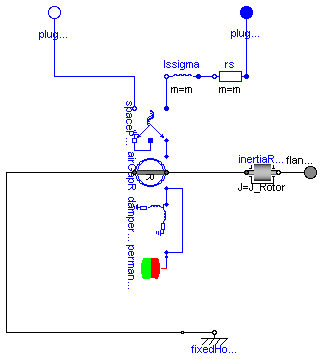
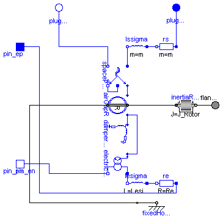
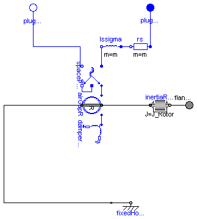

This package contains models of synchronous induction machines, based on space phasor theory:
Please keep in mind:
| Name | Description |
|---|---|
| SM_PermanentMagnetDamperCage | Permanent magnet synchronous induction machine |
| SM_ElectricalExcitedDamperCage | Electrical excited synchronous induction machine with damper cage |
| SM_ReluctanceRotorDamperCage | Synchronous induction machine with reluctance rotor and damper cage |

Model of a three phase permanent magnet synchronous induction machine.
Resistance and stray inductance of stator is modeled directly in stator phases, then using space phasor transformation and a rotor-fixed AirGap model. Resistance and stray inductance of rotor's squirrel cage is modeled in two axis of the rotor-fixed ccordinate system. Permanent magnet excitation is modelled by a constant equivalent excitation current feeding the d-axis. Only losses in stator and damper resistance are taken into account.
Whether a damper cage is present or not, can be selected with Boolean parameter DamperCage (default = true).
Default values for machine's parameters (a realistic example) are:
| number of pole pairs p | 2 | |
| stator's moment of inertia | 0.29 | kg.m2 |
| rotor's moment of inertia | 0.29 | kg.m2 |
| nominal frequency fNominal | 50 | Hz |
| nominal voltage per phase | 100 | V RMS |
| no-load voltage per phase | 112.3 | V RMS @ nominal speed |
| nominal current per phase | 100 | A RMS |
| nominal torque | 181.4 | Nm |
| nominal speed | 1500 | rpm |
| nominal mechanical output | 28.5 | kW |
| nominal rotor angle | 20.75 | degree |
| efficiency | 95.0 | % |
| power factor | 0.98 | |
| stator resistance | 0.03 | Ohm per phase in warm condition |
| stator reactance Xd | 0.4 | Ohm per phase in d-axis |
| stator reactance Xq | 0.4 | Ohm per phase in q-axis |
| stator stray reactance Xss | 0.1 | Ohm per phase |
| damper resistance in d-axis | 0.04 | Ohm in warm condition |
| damper resistance in q-axis | same as d-axis | |
| damper stray reactance in d-axis XDds | 0.05 | Ohm |
| damper stray reactance in q-axis XDqs | same as d-axis | |
| These values give the following inductances: | ||
| main field inductance in d-axis | (Xd - Xss)/(2*pi*fNominal) | |
| main field inductance in q-axis | (Xq - Xss)/(2*pi*fNominal) | |
| stator stray inductance per phase | Xss/(2*pi*fNominal) | |
| damper stray inductance in d-axis | XDds/(2*pi*fNominal) | |
| damper stray inductance in q-axis | XDqs/(2*pi*fNominal) |
| Type | Name | Default | Description |
|---|---|---|---|
| J_Rotor | 0.29 | rotor's moment of inertia [kg.m2] | |
| p | 2 | number of pole pairs (Integer) | |
| Excitation | |||
| fNominal | 50 | nominal frequency [Hz] | |
| V0 | 112.3 | no-load RMS voltage per phase @ fNominal [V] | |
| Nominal resistances and inductances | |||
| Rs | 0.03 | warm stator resistance per phase [Ohm] | |
| Lssigma | 0.1/(2*pi*fNominal) | stator stray inductance per phase [H] | |
| Lmd | 0.3/(2*pi*fNominal) | main field inductance in d-axis [H] | |
| Lmq | 0.3/(2*pi*fNominal) | main field inductance in q-axis [H] | |
| DamperCage | |||
| DamperCage | true | damper cage is present? | |
| Lrsigma | 0.05/(2*pi*fNominal) | damper stray inductance in d-axis [H] | |
| Lrsigmaq | Lrsigma | damper stray inductance in q-axis [H] | |
| Rr | 0.04 | warm damper resistance in d-axis [Ohm] | |
| Rrq | Rr | warm damper resistance in q-axis [Ohm] | |
| Type | Name | Description |
|---|---|---|
| flange_a | ||
| plug_sp | ||
| plug_sn |
model SM_PermanentMagnetDamperCage
"Permanent magnet synchronous induction machine"
extends Interfaces.PartialBasicInductionMachine;
parameter Modelica.SIunits.Frequency fNominal=50
"|Excitation|nominal frequency";
parameter Modelica.SIunits.Voltage V0=112.3
"|Excitation|no-load RMS voltage per phase @ fNominal";
parameter Modelica.SIunits.Resistance Rs=0.03
"|Nominal resistances and inductances|warm stator resistance per phase";
parameter Modelica.SIunits.Inductance Lssigma=0.1/(2*pi*fNominal)
"|Nominal resistances and inductances|stator stray inductance per phase";
parameter Modelica.SIunits.Inductance Lmd=0.3/(2*pi*fNominal)
"|Nominal resistances and inductances|main field inductance in d-axis";
parameter Modelica.SIunits.Inductance Lmq=0.3/(2*pi*fNominal)
"|Nominal resistances and inductances|main field inductance in q-axis";
parameter Boolean DamperCage = true "damper cage is present?";
parameter Modelica.SIunits.Inductance Lrsigma=0.05/(2*pi*fNominal)
"damper stray inductance in d-axis";
parameter Modelica.SIunits.Inductance Lrsigmaq=Lrsigma
"damper stray inductance in q-axis";
parameter Modelica.SIunits.Resistance Rr=0.04
"warm damper resistance in d-axis";
parameter Modelica.SIunits.Resistance Rrq=Rr
"warm damper resistance in q-axis";
output Modelica.SIunits.Current i_0_s( stateSelect=StateSelect.prefer) = spacePhasorS.zero.i
"stator zero-sequence current";
output Modelica.SIunits.Current idq_ss[2] = airGapR.i_ss
"stator space phasor current / stator fixed frame";
output Modelica.SIunits.Current idq_sr[2](each stateSelect=StateSelect.prefer)= airGapR.i_sr
"stator space phasor current / rotor fixed frame";
output Modelica.SIunits.Current idq_dr[2](each stateSelect=StateSelect.prefer)=
damperCage.spacePhasor_r.i_ if DamperCage
"damper space phasor current / rotor fixed frame";
protected
parameter Modelica.SIunits.Current Ie=sqrt(2)*V0/(Lmd*2*pi*fNominal)
"equivalent excitation current";
public
Modelica.Electrical.MultiPhase.Basic.Resistor rs(final m=m, final R=fill(Rs, m));
Modelica.Electrical.MultiPhase.Basic.Inductor lssigma(final m=m, final L=fill(Lssigma, m));
Machines.SpacePhasors.Components.SpacePhasor spacePhasorS;
Machines.BasicMachines.Components.AirGapR airGapR(
final p=p,
final Lmd=Lmd,
final Lmq=Lmq);
Machines.BasicMachines.Components.PermanentMagnet permanentMagnet(Ie=Ie);
Components.DamperCage damperCage(
final Lrsigma=Lrsigma,
final Lrsigmaq=Lrsigmaq,
final Rr=Rr,
final Rrq=Rrq) if DamperCage;
equation
connect(rs.plug_n, lssigma.plug_p);
connect(lssigma.plug_n, spacePhasorS.plug_p);
connect(rs.plug_p, plug_sp);
connect(spacePhasorS.plug_n, plug_sn);
connect(spacePhasorS.ground, spacePhasorS.zero);
connect(spacePhasorS.spacePhasor, airGapR.spacePhasor_s);
connect(airGapR.flange_a, inertiaRotor.flange_a);
connect(airGapR.support, internalSupport);
connect(airGapR.spacePhasor_r, permanentMagnet.spacePhasor_r);
connect(airGapR.spacePhasor_r, damperCage.spacePhasor_r);
end SM_PermanentMagnetDamperCage;

Model of a three phase electrical excited synchronous induction machine with damper cage.
Resistance and stray inductance of stator is modeled directly in stator phases, then using space phasor transformation and a rotor-fixed AirGap model. Resistance and stray inductance of rotor's squirrel cage is modeled in two axis of the rotor-fixed ccordinate system. Electrical excitation is modelled by converting excitation current and voltage to d-axis space phasors. Only losses in stator, damper and excitation resistance are taken into account.
Whether a damper cage is present or not, can be selected with Boolean parameter DamperCage (default = true).
Default values for machine's parameters (a realistic example) are:
| number of pole pairs p | 2 | |
| stator's moment of inertia | 0.29 | kg.m2 |
| rotor's moment of inertia | 0.29 | kg.m2 |
| nominal frequency fNominal | 50 | Hz |
| nominal voltage per phase | 100 | V RMS |
| no-load excitation current @ nominal voltage and frequency |
10 | A DC |
| warm excitation resistance | 2.5 | Ohm |
| nominal current per phase | 100 | A RMS |
| nominal apparent power | -30000 | VA |
| power factor | -1.0 | ind./cap. |
| nominal excitation current | 19 | A |
| efficiency w/o excitation | 97.1 | % |
| nominal torque | -196.7 | Nm |
| nominal speed | 1500 | rpm |
| nominal rotor angle | -57.23 | degree |
| stator resistance | 0.03 | Ohm per phase in warm condition |
| stator reactance Xd | 1.6 | Ohm per phase in d-axis |
| giving Kc | 0.625 | |
| stator reactance Xq | 1.6 | Ohm per phase in q-axis |
| stator stray reactance Xss | 0.1 | Ohm per phase |
| damper resistance in d-axis | 0.04 | Ohm in warm condition |
| damper resistance in q-axis | same as d-axis | |
| damper stray reactance in d-axis XDds | 0.1 | Ohm |
| damper stray reactance in q-axis XDqs | same as d-axis | |
| excitation stray inductance | 2.5 | % of total excitation inductance |
| These values give the following inductances: | ||
| main field inductance in d-axis | (Xd - Xss)/(2*pi*fNominal) | |
| main field inductance in q-axis | (Xq - Xss)/(2*pi*fNominal) | |
| stator stray inductance per phase | Xss/(2*pi*fNominal) | |
| damper stray inductance in d-axis | XDds/(2*pi*fNominal) | |
| damper stray inductance in q-axis | XDqs/(2*pi*fNominal) |
| Type | Name | Default | Description |
|---|---|---|---|
| J_Rotor | 0.29 | rotor's moment of inertia [kg.m2] | |
| p | 2 | number of pole pairs (Integer) | |
| Nominal resistances and inductances | |||
| Rs | 0.03 | warm stator resistance per phase [Ohm] | |
| Lssigma | 0.1/(2*pi*fNominal) | stator stray inductance per phase [H] | |
| Lmd | 1.5/(2*pi*fNominal) | main field inductance in d-axis [H] | |
| Lmq | 1.5/(2*pi*fNominal) | main field inductance in q-axis [H] | |
| DamperCage | |||
| DamperCage | true | damper cage is present? | |
| Lrsigma | 0.05/(2*pi*fNominal) | damper stray inductance in d-axis [H] | |
| Lrsigmaq | Lrsigma | damper stray inductance in q-axis [H] | |
| Rr | 0.04 | warm damper resistance in d-axis [Ohm] | |
| Rrq | Rr | warm damper resistance in q-axis [Ohm] | |
| Excitation | |||
| VNominal | 100 | nominal stator RMS voltage per phase [V] | |
| fNominal | 50 | nominal frequency [Hz] | |
| Ie0 | 10 | no-load excitation current @ nominal voltage and frequency [A] | |
| Re | 2.5 | warm excitation resistance [Ohm] | |
| sigmae | 0.025 | stray fraction of total excitation inductance | |
| Type | Name | Description |
|---|---|---|
| flange_a | ||
| plug_sp | ||
| plug_sn | ||
| pin_ep | ||
| pin_en |
model SM_ElectricalExcitedDamperCage
"Electrical excited synchronous induction machine with damper cage"
extends Interfaces.PartialBasicInductionMachine;
parameter Modelica.SIunits.Resistance Rs=0.03
"|Nominal resistances and inductances|warm stator resistance per phase";
parameter Modelica.SIunits.Inductance Lssigma=0.1/(2*pi*fNominal)
"|Nominal resistances and inductances|stator stray inductance per phase";
parameter Modelica.SIunits.Inductance Lmd=1.5/(2*pi*fNominal)
"|Nominal resistances and inductances|main field inductance in d-axis";
parameter Modelica.SIunits.Inductance Lmq=1.5/(2*pi*fNominal)
"|Nominal resistances and inductances|main field inductance in q-axis";
parameter Boolean DamperCage = true "damper cage is present?";
parameter Modelica.SIunits.Inductance Lrsigma=0.05/(2*pi*fNominal)
"damper stray inductance in d-axis";
parameter Modelica.SIunits.Inductance Lrsigmaq=Lrsigma
"damper stray inductance in q-axis";
parameter Modelica.SIunits.Resistance Rr=0.04
"warm damper resistance in d-axis";
parameter Modelica.SIunits.Resistance Rrq=Rr
"warm damper resistance in q-axis";
parameter Modelica.SIunits.Voltage VNominal=100
"|Excitation|nominal stator RMS voltage per phase";
parameter Modelica.SIunits.Frequency fNominal=50
"|Excitation|nominal frequency";
parameter Modelica.SIunits.Current Ie0=10
"|Excitation|no-load excitation current @ nominal voltage and frequency";
parameter Modelica.SIunits.Resistance Re=2.5
"|Excitation|warm excitation resistance";
parameter Real sigmae(min=0, max=1)=0.025
"|Excitation|stray fraction of total excitation inductance";
output Modelica.SIunits.Current i_0_s( stateSelect=StateSelect.prefer) = spacePhasorS.zero.i
"stator zero-sequence current";
output Modelica.SIunits.Current idq_ss[2] = airGapR.i_ss
"stator space phasor current / stator fixed frame";
output Modelica.SIunits.Current idq_sr[2](each stateSelect=StateSelect.prefer) = airGapR.i_sr
"stator space phasor current / rotor fixed frame";
output Modelica.SIunits.Current idq_dr[2](each stateSelect=StateSelect.prefer)=
damperCage.spacePhasor_r.i_ if DamperCage
"damper space phasor current / rotor fixed frame";
output Modelica.SIunits.Voltage ve = pin_ep.v-pin_en.v "excitation voltage";
output Modelica.SIunits.Current ie = pin_ep.i "excitation current";
protected
parameter Real TurnsRatio = sqrt(2)*VNominal/(2*pi*fNominal*Lmd*Ie0)
"stator current / excitation current";
parameter Modelica.SIunits.Inductance Lesigma = Lmd*TurnsRatio^2 * sigmae/(1-sigmae);
public
Modelica.Electrical.MultiPhase.Basic.Resistor rs(final m=m, final R=fill(Rs, m));
Modelica.Electrical.MultiPhase.Basic.Inductor lssigma(final m=m, final L=fill(Lssigma, m));
Machines.SpacePhasors.Components.SpacePhasor spacePhasorS;
Machines.BasicMachines.Components.AirGapR airGapR(
final p=p,
final Lmd=Lmd,
final Lmq=Lmq);
Components.DamperCage damperCage(
final Lrsigma=Lrsigma,
final Lrsigmaq=Lrsigmaq,
final Rr=Rr,
final Rrq=Rrq) if DamperCage;
Components.ElectricalExcitation electricalExcitation(final TurnsRatio=
TurnsRatio);
Modelica.Electrical.Analog.Basic.Resistor re(final R=Re);
Modelica.Electrical.Analog.Basic.Inductor lesigma(final L=Lesigma);
Modelica.Electrical.Analog.Interfaces.PositivePin pin_ep;
Modelica.Electrical.Analog.Interfaces.NegativePin pin_en;
equation
connect(rs.plug_n, lssigma.plug_p);
connect(lssigma.plug_n, spacePhasorS.plug_p);
connect(rs.plug_p, plug_sp);
connect(spacePhasorS.plug_n, plug_sn);
connect(spacePhasorS.ground, spacePhasorS.zero);
connect(spacePhasorS.spacePhasor, airGapR.spacePhasor_s);
connect(airGapR.flange_a, inertiaRotor.flange_a);
connect(airGapR.support, internalSupport);
connect(electricalExcitation.pin_en, pin_en);
connect(pin_ep, re.p);
connect(lesigma.p, re.n);
connect(lesigma.n, electricalExcitation.pin_ep);
connect(airGapR.spacePhasor_r, damperCage.spacePhasor_r);
connect(airGapR.spacePhasor_r, electricalExcitation.spacePhasor_r);
end SM_ElectricalExcitedDamperCage;

Model of a three phase synchronous induction machine with reluctance rotor and damper cage.
Resistance and stray inductance of stator is modeled directly in stator phases, then using space phasor transformation. Resistance and stray inductance of rotor's squirrel cage is modeled in two axis of the rotor-fixed ccordinate system. Both together connected via a rotor-fixed AirGap model. Only losses in stator and rotor resistance are taken into account.
Whether a damper cage is present or not, can be selected with Boolean parameter DamperCage (default = true).
Default values for machine's parameters (a realistic example) are:
| number of pole pairs p | 2 | |
| stator's moment of inertia | 0.29 | kg.m2 |
| rotor's moment of inertia | 0.29 | kg.m2 |
| nominal frequency fNominal | 50 | Hz |
| nominal voltage per phase | 100 | V RMS |
| nominal current per phase | 50 | A RMS |
| nominal torque | 46 | Nm |
| nominal speed | 1500 | rpm |
| nominal mechanical output | 7.23 | kW |
| efficiency | 96.98 | % |
| power factor | 0.497 | |
| stator resistance | 0.03 | Ohm per phase in warm condition |
| rotor resistance in d-axis | 0.04 | Ohm in warm condition |
| rotor resistance in q-axis | same as d-axis | |
| stator reactance Xsd in d-axis | 3 | Ohm per phase |
| stator reactance Xsq in q-axis | 1 | Ohm |
| stator stray reactance Xss | 0.1 | Ohm per phase |
| rotor stray reactance in d-axis Xrds | 0.1 | Ohm per phase |
| rotor stray reactance in q-axis Xrqs | same as d-axis | |
| These values give the following inductances: | ||
| stator stray inductance per phase | Xss/(2*pi*fNominal) | |
| rotor stray inductance in d-axis | Xrds/(2*pi*fNominal) | |
| rotor stray inductance in q-axis | Xrqs/(2*pi*fNominal) | |
| main field inductance per phase in d-axis | (Xsd-Xss)/(2*pi*fNominal) | |
| main field inductance per phase in q-axis | (Xsq-Xss)/(2*pi*fNominal) |
| Type | Name | Default | Description |
|---|---|---|---|
| J_Rotor | 0.29 | rotor's moment of inertia [kg.m2] | |
| p | 2 | number of pole pairs (Integer) | |
| Nominal resistances and inductances | |||
| Rs | 0.03 | warm stator resistance per phase [Ohm] | |
| Lssigma | 0.1/(2*pi*fNominal) | stator stray inductance per phase [H] | |
| Lmd | 2.9/(2*pi*fNominal) | main field inductance in d-axis [H] | |
| Lmq | 0.9/(2*pi*fNominal) | main field inductance in q-axis [H] | |
| DamperCage | |||
| DamperCage | true | damper cage is present? | |
| Lrsigma | 0.05/(2*pi*fNominal) | damper stray inductance in d-axis [H] | |
| Lrsigmaq | Lrsigma | damper stray inductance in q-axis [H] | |
| Rr | 0.04 | warm damper resistance in d-axis [Ohm] | |
| Rrq | Rr | warm damper resistance in q-axis [Ohm] | |
| Type | Name | Description |
|---|---|---|
| flange_a | ||
| plug_sp | ||
| plug_sn |
model SM_ReluctanceRotorDamperCage
"Synchronous induction machine with reluctance rotor and damper cage"
extends Interfaces.PartialBasicInductionMachine;
constant Modelica.SIunits.Frequency fNominal=50 "nominal frequency";
parameter Modelica.SIunits.Resistance Rs=0.03
"|Nominal resistances and inductances|warm stator resistance per phase";
parameter Modelica.SIunits.Inductance Lssigma=0.1/(2*pi*fNominal)
"|Nominal resistances and inductances|stator stray inductance per phase";
parameter Modelica.SIunits.Inductance Lmd=2.9/(2*pi*fNominal)
"|Nominal resistances and inductances|main field inductance in d-axis";
parameter Modelica.SIunits.Inductance Lmq=0.9/(2*pi*fNominal)
"|Nominal resistances and inductances|main field inductance in q-axis";
parameter Boolean DamperCage = true "damper cage is present?";
parameter Modelica.SIunits.Inductance Lrsigma=0.05/(2*pi*fNominal)
"damper stray inductance in d-axis";
parameter Modelica.SIunits.Inductance Lrsigmaq=Lrsigma
"damper stray inductance in q-axis";
parameter Modelica.SIunits.Resistance Rr=0.04
"warm damper resistance in d-axis";
parameter Modelica.SIunits.Resistance Rrq=Rr
"warm damper resistance in q-axis";
output Modelica.SIunits.Current i_0_s( stateSelect=StateSelect.prefer) = spacePhasorS.zero.i
"stator zero-sequence current";
output Modelica.SIunits.Current idq_ss[2] = airGapR.i_ss
"stator space phasor current / stator fixed frame";
output Modelica.SIunits.Current idq_sr[2](each stateSelect=StateSelect.prefer) = airGapR.i_sr
"stator space phasor current / rotor fixed frame";
output Modelica.SIunits.Current idq_rs[2] = airGapR.i_rs if DamperCage
"rotor space phasor current / stator fixed frame";
output Modelica.SIunits.Current idq_rr[2](each stateSelect=StateSelect.prefer)=
airGapR.i_rr if DamperCage "rotor space phasor current / rotor fixed frame";
Modelica.Electrical.MultiPhase.Basic.Resistor rs(final m=m, final R=fill(Rs, m));
Modelica.Electrical.MultiPhase.Basic.Inductor lssigma(final m=m, final L=fill(Lssigma, m));
Machines.SpacePhasors.Components.SpacePhasor spacePhasorS;
Machines.BasicMachines.Components.AirGapR airGapR(
final p=p,
final Lmd=Lmd,
final Lmq=Lmq);
Components.DamperCage damperCage(
final Lrsigma=Lrsigma,
final Lrsigmaq=Lrsigmaq,
final Rr=Rr,
final Rrq=Rrq) if DamperCage;
equation
connect(rs.plug_n, lssigma.plug_p);
connect(lssigma.plug_n, spacePhasorS.plug_p);
connect(rs.plug_p, plug_sp);
connect(spacePhasorS.plug_n, plug_sn);
connect(spacePhasorS.spacePhasor, airGapR.spacePhasor_s);
connect(spacePhasorS.ground, spacePhasorS.zero);
connect(airGapR.flange_a, inertiaRotor.flange_a);
connect(airGapR.support, internalSupport);
connect(airGapR.spacePhasor_r, damperCage.spacePhasor_r);
end SM_ReluctanceRotorDamperCage;